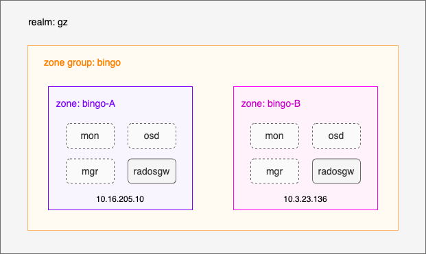

一、概述 1.1 概念与术语 radosgw多站点 指的是在多个地理位置或数据中心之间进行数据复制和同步，用于实现负载均衡、灾备恢复以及满足数据在特定地理位置存储要求。
zone :
zone group :
由一个或多zone组成，包含一个master zone，其它zone称为secondary zone，zone group内的zone之间同步数据，以实现数据备份和灾难恢复。并且支持active-active与active-passive两种模式。
realm :
由一个或多zone group组成，包含一个master zone group,其它zone group称为secondary zone group。
中英文对照表
英文
中文
zone
区域或站点
master zone
主区域或主站点
secondary zone
备区域或备站点
zone group
区域组
master zone group
主区域组
secondary zone group
备区域组
realm
域
1.2 演示环境说明 
演示环境为单realm下的单zone group，zone group内有两个zone。bingo-A为已存放数据的老集群，准备作为主站点，bingo-B为未存放数据的新集群，用来作为灾备的备站点
二、主站点配置 2.1 主站点环境查看 radosgw安装后会在Ceph集群创建一些带有rgw的名字的pool。如果上传过对象还会自动创建default.rgw.buckets.index和default.rgw.buckets.data这两个pool。
1 2 3 4 5 6 7 [root@node-10 ~]# ceph osd pool ls | grep rgw .rgw.root default.rgw.control default.rgw.meta default.rgw.log default.rgw.buckets.index default.rgw.buckets.data
bingo-A已经存放了数据，为后续测试向bingo-B数据同步做铺垫。
1 2 3 4 5 6 7 8 9 10 11 12 [root@node-10 ~]# ceph df GLOBAL: SIZE AVAIL RAW USED %RAW USED 1.83TiB 1.81TiB 14.0GiB 0.75 POOLS: NAME ID USED %USED MAX AVAIL OBJECTS .rgw.root 157 1.09KiB 0 440GiB 4 default.rgw.control 158 0B 0 440GiB 8 default.rgw.meta 159 786B 0 440GiB 5 default.rgw.log 160 0B 0 440GiB 175 default.rgw.buckets.index 161 0B 0 440GiB 16 default.rgw.buckets.data 162 15.3MiB 0 440GiB 5
注意：配置主站点前如果ceph.conf中有rgw_admin_entry选项请先删掉。
2.2 创建域 radosgw多站点中，可能存在不同的zone group和zone。然而，它们必须在realm中协同工作。所有的radosgw从master zone group的master zone主机上的ceph-radosgw守护进程检索其配置。
2.2.1创建前查看 1 2 3 4 5 [root@node-10 ~]# radosgw-admin realm list { "default_info" : "" , "realms" : [] }
2.2.2 创建 radosgw-admin realm create --rgw-realm={realm-name} [--default]
1 2 3 4 5 6 7 8 // 在创建了realm 后，radosgw-admin 将回显 realm 配置 [root@node-10 ~]# radosgw-admin realm create --rgw-realm=gz --default { "id" : "31a49490-d7f4-42c6-ad88-15493474a3d5" , "name" : "gz" , "current_period" : "e3f5f0c1-1ede-4ce5-ae07-d48367b4a28b" , "epoch" : 1 }
2.2.3 验证 1 2 3 4 5 6 7 [root@node-10 ~]# radosgw-admin realm get { "id" : "31a49490-d7f4-42c6-ad88-15493474a3d5" , "name" : "gz" , "current_period" : "e3f5f0c1-1ede-4ce5-ae07-d48367b4a28b" , "epoch" : 1 }
2.3 重命名默认区域组和区域 2.3.1 重命名前查看 通常情况下，radosgw启动后会自动创建一个名为default 的zone group，并且会在该zone group下自动创建一个名为default 的zone。可以通过下面命令查看验证。
radosgw-admin zonegroup list ：查看所有的zone group
radosgw-admin zonegroup get --rgw-zonegroup={zone-group-name}：查看某个zone group详细信息
radosgw-admin zone list ：查看所有的zone
radosgw-admin zone get --rgw-zone={zone-name}：查看某个zone详细信息
1 2 3 4 5 6 7 8 9 10 11 12 13 14 15 16 17 18 19 20 21 22 23 24 25 26 27 28 29 30 31 32 33 34 35 36 37 38 39 40 41 42 43 44 45 46 47 48 49 50 51 52 53 54 55 56 57 58 59 60 61 62 63 64 65 66 67 68 69 70 71 72 73 74 [root@node-10 ~]# radosgw-admin zonegroup list { "default_info" : "" , "zonegroups" : [ "default" ] } [root@node-10 ~]# radosgw-admin zonegroup get --rgw-zonegroup=default { "id" : "89129545-7900-46a3-be71-943a85bba582" , "name" : "default" , "api_name" : "default" , "is_master" : "true" , "endpoints" : [], "master_zone" : "2dfd246d-bf16-4053-93e4-1f78570f775b" , "zones" : [ { "id" : "2dfd246d-bf16-4053-93e4-1f78570f775b" , "name" : "default" , "endpoints" : [], "log_meta" : "false" , "log_data" : "false" , "bucket_index_max_shards" : 0, "read_only" : "false" , } ], "realm_id" : "" } [root@node-10 ~]# radosgw-admin zone list { "default_info" : "" , "zones" : [ "default" ] } [root@node-10 ~]# radosgw-admin zone get --rgw-zone=default { "id" : "2dfd246d-bf16-4053-93e4-1f78570f775b" , "name" : "default" , "domain_root" : "default.rgw.meta:root" , "control_pool" : "default.rgw.control" , "gc_pool" : "default.rgw.log:gc" , "lc_pool" : "default.rgw.log:lc" , "log_pool" : "default.rgw.log" , "intent_log_pool" : "default.rgw.log:intent" , "usage_log_pool" : "default.rgw.log:usage" , "reshard_pool" : "default.rgw.log:reshard" , "user_keys_pool" : "default.rgw.meta:users.keys" , "user_email_pool" : "default.rgw.meta:users.email" , "user_swift_pool" : "default.rgw.meta:users.swift" , "user_uid_pool" : "default.rgw.meta:users.uid" , "system_key" : { "access_key" : "" , "secret_key" : "" }, "placement_pools" : [ { "key" : "default-placement" , "val" : { "index_pool" : "default.rgw.buckets.index" , "data_pool" : "default.rgw.buckets.data" , "data_extra_pool" : "default.rgw.buckets.non-ec" , "index_type" : 0, "compression" : "" } } ], "metadata_heap" : "" , "tier_config" : [], "realm_id" : "" }
2.3.2 重命名 radosgw-admin zonegroup rename --rgw-zonegroup {zone-group-name} --zonegroup-new-name={new-zone-group-name}
radosgw-admin zone rename --rgw-zonegroup {zone-group-name} --rgw-zone {zone name} --zone-new-name={new-zone-name}
1 2 [root@node-10 ~]# radosgw-admin zonegroup rename --rgw-zonegroup default --zonegroup-new-name=bingo [root@node-10 ~]# radosgw-admin zone rename --rgw-zonegroup bingo --rgw-zone default --zone-new-name=bingo-A
2.3.3 验证 1 2 3 4 5 6 7 8 9 10 11 12 13 14 15 16 17 18 19 20 21 22 23 24 25 26 27 28 29 30 31 32 33 34 35 36 37 38 39 40 41 42 43 44 45 46 47 48 49 50 51 52 53 54 55 56 [root@node-10 ~]# radosgw-admin zonegroup list { "default_info" : "" , "zonegroups" : [ "bingo" ] } [root@node-10 ~]# radosgw-admin zonegroup get --rgw-zonegroup=bingo { "id" : "89129545-7900-46a3-be71-943a85bba582" , "name" : "bingo" , "api_name" : "default" , "is_master" : "true" , "endpoints" : [], "master_zone" : "2dfd246d-bf16-4053-93e4-1f78570f775b" , "zones" : [ { "id" : "2dfd246d-bf16-4053-93e4-1f78570f775b" , "name" : "bingo-A" , "endpoints" : [], "log_meta" : "false" , "log_data" : "false" , "bucket_index_max_shards" : 0, "read_only" : "false" , } ], "realm_id" : "" } [root@node-10 ~]# radosgw-admin zone list { "default_info" : "" , "zones" : [ "bingo-A" ] } [root@node-10 ~]# radosgw-admin zone get --rgw-zone=bingo-A { "id" : "2dfd246d-bf16-4053-93e4-1f78570f775b" , "name" : "bingo-A" , "domain_root" : "default.rgw.meta:root" , "control_pool" : "default.rgw.control" , "gc_pool" : "default.rgw.log:gc" , "lc_pool" : "default.rgw.log:lc" , "log_pool" : "default.rgw.log" , "intent_log_pool" : "default.rgw.log:intent" , "usage_log_pool" : "default.rgw.log:usage" , "reshard_pool" : "default.rgw.log:reshard" , "user_keys_pool" : "default.rgw.meta:users.keys" , "user_email_pool" : "default.rgw.meta:users.email" , "user_swift_pool" : "default.rgw.meta:users.swift" , "user_uid_pool" : "default.rgw.meta:users.uid" , "realm_id" : "" }
2.4 设置主区域组和主区域 2.4.1 设置主区域组 radosgw-admin zonegroup modify --rgw-realm={realm-name} --rgw-zonegroup={zone-group-name} --endpoints={url} --master --default
1 2 3 4 5 6 7 8 9 10 11 12 13 14 15 16 17 18 19 20 21 22 23 24 25 26 27 28 29 30 31 32 33 34 35 [root@node-10 ~]# radosgw-admin zonegroup modify --rgw-realm=gz --rgw-zonegroup=bingo --endpoints=http://10.16.205.10:80 --master --default { "id" : "89129545-7900-46a3-be71-943a85bba582" , "name" : "bingo" , "api_name" : "default" , "is_master" : "true" , "endpoints" : [ "http://10.16.205.10:80" ], "hostnames" : [], "hostnames_s3website" : [], "master_zone" : "2dfd246d-bf16-4053-93e4-1f78570f775b" , "zones" : [ { "id" : "2dfd246d-bf16-4053-93e4-1f78570f775b" , "name" : "bingo-A" , "endpoints" : [], "log_meta" : "false" , "log_data" : "false" , "bucket_index_max_shards" : 0, "read_only" : "false" , "tier_type" : "" , "sync_from_all" : "true" , "sync_from" : [] } ], "placement_targets" : [ { "name" : "default-placement" , "tags" : [] } ], "default_placement" : "default-placement" , "realm_id" : "31a49490-d7f4-42c6-ad88-15493474a3d5" }
2.4.2 设置主区域 radosgw-admin zone modify --rgw-realm={realm-name} --rgw-zonegroup={zone-group-name} --rgw-zone={zone-name} --endpoints={url} --master --default
1 2 3 4 5 6 7 8 9 10 11 12 13 14 15 16 17 18 [root@node-10 ~]# radosgw-admin zone modify --rgw-realm=gz --rgw-zonegroup=bingo --rgw-zone=bingo-A --endpoints=http://10.16.205.10:80 --master --default { "id" : "2dfd246d-bf16-4053-93e4-1f78570f775b" , "name" : "bingo-A" , "domain_root" : "default.rgw.meta:root" , "control_pool" : "default.rgw.control" , "gc_pool" : "default.rgw.log:gc" , "lc_pool" : "default.rgw.log:lc" , "log_pool" : "default.rgw.log" , "intent_log_pool" : "default.rgw.log:intent" , "usage_log_pool" : "default.rgw.log:usage" , "reshard_pool" : "default.rgw.log:reshard" , "user_keys_pool" : "default.rgw.meta:users.keys" , "user_email_pool" : "default.rgw.meta:users.email" , "user_swift_pool" : "default.rgw.meta:users.swift" , "user_uid_pool" : "default.rgw.meta:users.uid" , "realm_id" : "31a49490-d7f4-42c6-ad88-15493474a3d5" }
2.4.3 验证 radosgw-admin zonegroup get [ --rgw-zonegroup={zone-group-name} ]
说明：
在2.4.1节设置主区域组的时候已将bingo设置为default zone group，以后zone group操作如果没有指定名字，则默认是bingo这个zone group。
1 2 3 4 5 6 7 8 9 10 11 12 13 14 15 16 17 18 19 20 21 22 23 24 25 26 27 28 29 30 31 32 33 34 35 36 37 [root@node-10 ~]# radosgw-admin zonegroup get { "id" : "89129545-7900-46a3-be71-943a85bba582" , "name" : "bingo" , "api_name" : "default" , "is_master" : "true" , "endpoints" : [ "http://10.16.205.10:80" ], "hostnames" : [], "hostnames_s3website" : [], "master_zone" : "2dfd246d-bf16-4053-93e4-1f78570f775b" , "zones" : [ { "id" : "2dfd246d-bf16-4053-93e4-1f78570f775b" , "name" : "bingo-A" , "endpoints" : [ "http://10.16.205.10:80" ], "log_meta" : "false" , "log_data" : "false" , "bucket_index_max_shards" : 0, "read_only" : "false" , "tier_type" : "" , "sync_from_all" : "true" , "sync_from" : [] } ], "placement_targets" : [ { "name" : "default-placement" , "tags" : [] } ], "default_placement" : "default-placement" , "realm_id" : "31a49490-d7f4-42c6-ad88-15493474a3d5" }
2.5 创建系统同步用户 secondary zone必须向master zone获取realm和period用于数据同步，获取前需要进行身份验证，我们需要在master zone上创建一个系统级别用户用于身份验证。
2.5.1 创建前查看 radosgw-admin user info --uid={user-name}：查看用户信息
1 2 [root@node-10 ~]# radosgw-admin user info --uid=sync-user could not fetch user info: no user info saved
2.5.2 创建 radosgw-admin user create --uid="{user-name}" --display-name="{display-name}" --system
1 2 3 4 5 6 7 8 9 10 11 12 13 14 15 16 17 18 19 20 21 22 23 24 25 26 27 28 29 30 31 [root@node-10 ~]# radosgw-admin user create --uid="sync-user" --display-name="Sync User" --system { "user_id" : "sync-user" , "display_name" : "Sync User" , "email" : "" , "suspended" : 0, "max_buckets" : 100, "auid" : 0, "subusers" : [], "keys" : [ { "user" : "sync-user" , "access_key" : "WB55YP5G6WSB36PQLM2Z" , "secret_key" : "aXyw6Ck6MV85OZaC3bgwaMYB3pI7Dr4i9ogyBIti" } ], "swift_keys" : [], "caps" : [], "op_mask" : "read, write, delete" , "system" : "true" , "default_placement" : "" , "placement_tags" : [], "bucket_quota" : { "enabled" : true , "check_on_raw" : false , "max_size" : -1, "max_size_kb" : 0, "max_objects" : 10000000 }, "type" : "rgw" }
2.5.3 验证 1 2 3 4 5 6 7 8 9 10 11 12 13 14 15 16 17 18 19 20 21 22 23 24 25 26 27 28 29 30 31 [root@node-10 ~]# radosgw-admin user info --uid=sync-user { "user_id" : "sync-user" , "display_name" : "Sync User" , "email" : "" , "suspended" : 0, "max_buckets" : 100, "auid" : 0, "subusers" : [], "keys" : [ { "user" : "sync-user" , "access_key" : "WB55YP5G6WSB36PQLM2Z" , "secret_key" : "aXyw6Ck6MV85OZaC3bgwaMYB3pI7Dr4i9ogyBIti" } ], "swift_keys" : [], "caps" : [], "op_mask" : "read, write, delete" , "system" : "true" , "default_placement" : "" , "placement_tags" : [], "bucket_quota" : { "enabled" : true , "check_on_raw" : false , "max_size" : -1, "max_size_kb" : 0, "max_objects" : 10000000 }, "type" : "rgw" }
2.6 绑定域 将zone和zone group与realm绑定。
2.6.1 绑定前查看 1 2 3 4 5 6 7 [root@node-10 ~]# radosgw-admin realm get { "id" : "31a49490-d7f4-42c6-ad88-15493474a3d5" , "name" : "gz" , "current_period" : "e3f5f0c1-1ede-4ce5-ae07-d48367b4a28b" , "epoch" : 1 }
2.6.2 绑定realm radosgw-admin zone modify --rgw-realm={realm-name} --rgw-zonegroup={zone-group-name} --rgw-zone={zone-name} --endpoints={url} --access-key={key} --secret={key} --master --default
说明：access-key和secret为2.5节创建的系统用户。
1 2 3 4 5 6 7 8 9 10 11 12 13 14 15 16 17 18 19 20 21 22 23 24 25 26 27 28 29 30 31 32 33 34 35 36 [root@node-10 ~]# radosgw-admin zone modify --rgw-realm="gz" --rgw-zonegroup="bingo" --rgw-zone="bingo-A" --endpoints=http://10.16.205.10:80 --access-key=WB55YP5G6WSB36PQLM2Z --secret=aXyw6Ck6MV85OZaC3bgwaMYB3pI7Dr4i9ogyBIti --master --default { "id" : "2dfd246d-bf16-4053-93e4-1f78570f775b" , "name" : "bingo-A" , "domain_root" : "default.rgw.meta:root" , "control_pool" : "default.rgw.control" , "gc_pool" : "default.rgw.log:gc" , "lc_pool" : "default.rgw.log:lc" , "log_pool" : "default.rgw.log" , "intent_log_pool" : "default.rgw.log:intent" , "usage_log_pool" : "default.rgw.log:usage" , "reshard_pool" : "default.rgw.log:reshard" , "user_keys_pool" : "default.rgw.meta:users.keys" , "user_email_pool" : "default.rgw.meta:users.email" , "user_swift_pool" : "default.rgw.meta:users.swift" , "user_uid_pool" : "default.rgw.meta:users.uid" , "system_key" : { "access_key" : "WB55YP5G6WSB36PQLM2Z" , "secret_key" : "aXyw6Ck6MV85OZaC3bgwaMYB3pI7Dr4i9ogyBIti" }, "placement_pools" : [ { "key" : "default-placement" , "val" : { "index_pool" : "default.rgw.buckets.index" , "data_pool" : "default.rgw.buckets.data" , "data_extra_pool" : "default.rgw.buckets.non-ec" , "index_type" : 0, "compression" : "" } } ], "metadata_heap" : "" , "tier_config" : [], "realm_id" : "31a49490-d7f4-42c6-ad88-15493474a3d5" }
2.6.3 验证 1 2 3 4 5 6 7 8 9 10 11 12 13 14 15 16 17 18 19 20 21 22 23 24 25 26 27 28 29 30 31 32 33 34 35 36 37 [root@node-10 ~]# radosgw-admin zonegroup get { "id" : "89129545-7900-46a3-be71-943a85bba582" , "name" : "bingo" , "api_name" : "default" , "is_master" : "true" , "endpoints" : [ "http://10.16.205.10:80" ], "hostnames" : [], "hostnames_s3website" : [], "master_zone" : "2dfd246d-bf16-4053-93e4-1f78570f775b" , "zones" : [ { "id" : "2dfd246d-bf16-4053-93e4-1f78570f775b" , "name" : "bingo-A" , "endpoints" : [ "http://10.16.205.10:80" ], "log_meta" : "false" , "log_data" : "false" , "bucket_index_max_shards" : 0, "read_only" : "false" , "tier_type" : "" , "sync_from_all" : "true" , "sync_from" : [] } ], "placement_targets" : [ { "name" : "default-placement" , "tags" : [] } ], "default_placement" : "default-placement" , "realm_id" : "31a49490-d7f4-42c6-ad88-15493474a3d5" }
2.7 应用变更 应用变更period，同一个zone group的其它zone会接收新的配置变更。
2.7.1 变更前查看 1 2 3 4 5 6 7 [root@node-10 ~]# radosgw-admin realm get { "id" : "31a49490-d7f4-42c6-ad88-15493474a3d5" , "name" : "gz" , "current_period" : "e3f5f0c1-1ede-4ce5-ae07-d48367b4a28b" , "epoch" : 1 }
2.7.2 变更 radosgw-admin period update --commit
1 2 3 4 5 6 7 8 9 10 11 12 13 14 15 16 17 18 19 20 21 22 23 24 25 26 27 28 29 30 31 32 33 34 35 36 37 38 39 40 41 [root@node-10 ~]# radosgw-admin period update --commit { "id" : "2a11b308-6430-47d2-8059-76894abfb74c" , "epoch" : 1, "predecessor_uuid" : "e3f5f0c1-1ede-4ce5-ae07-d48367b4a28b" , "sync_status" : [], "period_map" : { "id" : "2a11b308-6430-47d2-8059-76894abfb74c" , "zonegroups" : [ { "id" : "89129545-7900-46a3-be71-943a85bba582" , "name" : "bingo" , "api_name" : "default" , "is_master" : "true" , "endpoints" : [ "http://10.16.205.10:80" ], "master_zone" : "2dfd246d-bf16-4053-93e4-1f78570f775b" , "zones" : [ { "id" : "2dfd246d-bf16-4053-93e4-1f78570f775b" , "name" : "bingo-A" , "endpoints" : [ "http://10.16.205.10:80" ], "log_meta" : "false" , "log_data" : "false" , "bucket_index_max_shards" : 0, "read_only" : "false" , } ], "default_placement" : "default-placement" , "realm_id" : "31a49490-d7f4-42c6-ad88-15493474a3d5" } ], "master_zonegroup" : "89129545-7900-46a3-be71-943a85bba582" , "master_zone" : "2dfd246d-bf16-4053-93e4-1f78570f775b" , "realm_id" : "31a49490-d7f4-42c6-ad88-15493474a3d5" , "realm_name" : "gz" , "realm_epoch" : 2 }
2.7.3 验证 1 2 3 4 5 6 7 [root@node-10 ~]# radosgw-admin realm get { "id" : "31a49490-d7f4-42c6-ad88-15493474a3d5" , "name" : "gz" , "current_period" : "2a11b308-6430-47d2-8059-76894abfb74c" , "epoch" : 2 }
2.8 重启服务 更新master zone主机上的ceph.conf配置文件，添加rgw_zone配置选项。
1 2 [client.radosgw]下添加配置: rgw_ zone=bingo-A
重启radosgw服务
systemctl restart ceph-radosgw@radosgw
1 [root@node-10 ~]# systemctl restart ceph-radosgw@radosgw
2.9 查看同步状态 radosgw-admin sync status ：查看同步状态
1 2 3 4 5 [root@node-10 ~]# radosgw-admin sync status realm 31a49490-d7f4-42c6-ad88-15493474a3d5 (gz) zonegroup 89129545-7900-46a3-be71-943a85bba582 (bingo) zone 2dfd246d-bf16-4053-93e4-1f78570f775b (bingo-A) metadata sync no sync (zone is master)
三、备站点配置 3.1 备站点环境查看 通常情况下，radosgw启动后会自动创建一个名为default 的zone group，并且会在该zone group下自动创建一个名为default 的zone。可以通过下面命令查看验证。
radosgw-admin zonegroup list ：查看所有的zone group
radosgw-admin zone list ：查看所有的zone
1 2 3 4 5 6 7 8 9 10 11 12 13 14 15 [root@ceph-single-cluster ~]# radosgw-admin zonegroup list { "default_info" : "bd5c6fa4-695f-4017-8bc1-fd2fe5ee045f" , "zonegroups" : [ "default" ] } [root@ceph-single-cluster ~]# radosgw-admin zone list { "default_info" : "f01ddceb-92cb-4ffb-850f-099df6aecaab" , "zones" : [ "default" ] }
radosgw启动后会在集群中自动创建一些带有rgw名字的pool，本演示环境中bingo-B为全新集群，里面没存储任何数据。
1 2 3 4 5 [root@ceph-single-cluster ~]# ceph osd pool ls | grep rgw .rgw.root default.rgw.control default.rgw.meta default.rgw.log
假设使用新安装的集群进行多站点配置，尚未使用默认zone及其pool来存储数据，那么可以把默认zone和pool删除。如果已存在数据将会丢失并不可恢复。
删除默认zone
1 2 3 4 5 6 [root@ceph-single-cluster ~]# radosgw-admin zone delete --rgw-zone=default [root@ceph-single-cluster ~]# radosgw-admin zone list { "default_info" : "" , "zones" : [] }
删除radosgw自动创建的默认pool（务必确认rgw尚未存数据）
1 2 3 4 5 6 7 8 9 10 [root@ceph-single-cluster ~]# ceph osd pool ls | grep -F default.rgw. default.rgw.control default.rgw.meta default.rgw.log [root@ceph-single-cluster ~]# rados rmpool default.rgw.control default.rgw.control --yes-i-really-really-mean-it successfully deleted pool default.rgw.control [root@ceph-single-cluster ~]# rados rmpool default.rgw.meta default.rgw.meta --yes-i-really-really-mean-it successfully deleted pool default.rgw.meta [root@ceph-single-cluster ~]# rados rmpool default.rgw.log default.rgw.log --yes-i-really-really-mean-it successfully deleted pool default.rgw.log
注意：配置备站点前如果ceph.conf配置文件中有 rgw_admin_entry选项请先删掉此选项。
3.2 从主站点拉取域 radosgw-admin realm pull --url={url-to-master-zone-gateway} --access-key={access-key} --secret={secret}
说明：
access-key和secret为2.5节创建的系统用户。
1 2 3 4 5 6 7 8 9 [root@ceph-single-cluster ~]# radosgw-admin realm pull --url=http://10.16.205.10:80 --access-key=WB55YP5G6WSB36PQLM2Z --secret=aXyw6Ck6MV85OZaC3bgwaMYB3pI7Dr4i9ogyBIti 2023-09-10 19:04:56.407005 7f1b46286f80 1 error read_lastest_epoch .rgw.root:periods.2a11b308-6430-47d2-8059-76894abfb74c.latest_epoch 2023-09-10 19:04:56.567897 7f1b46286f80 1 Set the period's master zonegroup 89129545-7900-46a3-be71-943a85bba582 as the default { "id": "31a49490-d7f4-42c6-ad88-15493474a3d5", "name": "gz", "current_period": "2a11b308-6430-47d2-8059-76894abfb74c", "epoch": 2 }
设置gz为默认realm。
radosgw-admin realm default --rgw-realm={realm-name}
1 2 3 [root@ceph-single-cluster ~]# radosgw-admin realm default --rgw-realm=gz [root@ceph-single-cluster ~]# radosgw-admin realm get-default default realm: 31a49490-d7f4-42c6-ad88-15493474a3d5
3.3 从主站点拉取 period radosgw-admin period pull --url={url-to-master-zone-gateway} --access-key={access-key} --secret={secret}
说明：access-key和secret为2.5节创建的系统用户。
1 2 3 4 5 6 7 8 9 10 11 12 13 14 15 16 17 18 19 20 21 22 23 24 25 26 27 28 29 30 31 32 33 34 35 36 37 38 39 40 41 42 43 [root@ceph-single-cluster ~]# radosgw-admin period pull --url=http://10.16.205.10:80 --access-key=WB55YP5G6WSB36PQLM2Z --secret=aXyw6Ck6MV85OZaC3bgwaMYB3pI7Dr4i9ogyBIti 2023-09-10 19:07:24.203099 7f084e32ff80 1 found existing latest_epoch 1 >= given epoch 1, returning r=-17 { "id" : "2a11b308-6430-47d2-8059-76894abfb74c" , "epoch" : 1, "predecessor_uuid" : "e3f5f0c1-1ede-4ce5-ae07-d48367b4a28b" , "sync_status" : [], "period_map" : { "id" : "2a11b308-6430-47d2-8059-76894abfb74c" , "zonegroups" : [ { "id" : "89129545-7900-46a3-be71-943a85bba582" , "name" : "bingo" , "api_name" : "default" , "is_master" : "true" , "endpoints" : [ "http://10.16.205.10:80" ], "master_zone" : "2dfd246d-bf16-4053-93e4-1f78570f775b" , "zones" : [ { "id" : "2dfd246d-bf16-4053-93e4-1f78570f775b" , "name" : "bingo-A" , "endpoints" : [ "http://10.16.205.10:80" ], "log_meta" : "false" , "log_data" : "false" , "bucket_index_max_shards" : 0, "read_only" : "false" , } ], "default_placement" : "default-placement" , "realm_id" : "31a49490-d7f4-42c6-ad88-15493474a3d5" } ], }, "master_zonegroup" : "89129545-7900-46a3-be71-943a85bba582" , "master_zone" : "2dfd246d-bf16-4053-93e4-1f78570f775b" , "realm_id" : "31a49490-d7f4-42c6-ad88-15493474a3d5" , "realm_name" : "gz" , "realm_epoch" : 2 }
3.4 创建备区域 1 2 3 4 radosgw-admin zone create --rgw-zonegroup={zone-group-name}\ \ \
说明：
–read-only：默认所有zone都以active-active模式运行；即客户端可能会将数据写入任何zone，zone会将数据复制到 zone group 中的所有其他 zone。如果 second zone 不接受写操作，请指定 --read-only 标志，以active-passive模式运行。
本次演示环境会将bingo-B zone设置为read-only。
1 2 3 4 5 6 7 8 9 10 11 12 13 14 15 16 17 18 19 20 21 22 23 24 25 26 27 28 29 30 31 32 33 34 35 36 37 38 [root@ceph-single-cluster ~]# radosgw-admin zone create --rgw-zonegroup=bingo --rgw-zone=bingo-B --endpoints=http://10.3.23.136:80 --access-key=WB55YP5G6WSB36PQLM2Z --secret=aXyw6Ck6MV85OZaC3bgwaMYB3pI7Dr4i9ogyBIti --read-only 2023-09-10 19:10:40.661862 7faea03c2f80 0 failed reading obj info from .rgw.root:zone_info.2dfd246d-bf16-4053-93e4-1f78570f775b: (2) No such file or directory 2023-09-10 19:10:40.661947 7faea03c2f80 0 WARNING: could not read zone params for zone id =2dfd246d-bf16-4053-93e4-1f78570f775b name=bingo-A { "id" : "3b06b85f-8266-4e44-91ee-e0b334f619c5" , "name" : "bingo-B" , "domain_root" : "bingo-B.rgw.meta:root" , "control_pool" : "bingo-B.rgw.control" , "gc_pool" : "bingo-B.rgw.log:gc" , "lc_pool" : "bingo-B.rgw.log:lc" , "log_pool" : "bingo-B.rgw.log" , "intent_log_pool" : "bingo-B.rgw.log:intent" , "usage_log_pool" : "bingo-B.rgw.log:usage" , "reshard_pool" : "bingo-B.rgw.log:reshard" , "user_keys_pool" : "bingo-B.rgw.meta:users.keys" , "user_email_pool" : "bingo-B.rgw.meta:users.email" , "user_swift_pool" : "bingo-B.rgw.meta:users.swift" , "user_uid_pool" : "bingo-B.rgw.meta:users.uid" , "system_key" : { "access_key" : "WB55YP5G6WSB36PQLM2Z" , "secret_key" : "aXyw6Ck6MV85OZaC3bgwaMYB3pI7Dr4i9ogyBIti" }, "placement_pools" : [ { "key" : "default-placement" , "val" : { "index_pool" : "bingo-B.rgw.buckets.index" , "data_pool" : "bingo-B.rgw.buckets.data" , "data_extra_pool" : "bingo-B.rgw.buckets.non-ec" , "index_type" : 0, "compression" : "" } } ], "metadata_heap" : "" , "tier_config" : [], "realm_id" : "31a49490-d7f4-42c6-ad88-15493474a3d5" }
验证
1 2 3 4 5 6 7 8 9 10 11 12 13 14 15 16 17 18 19 20 21 22 23 24 25 26 27 28 29 30 31 32 33 34 35 36 37 38 39 40 41 [root@ceph-single-cluster ~]# radosgw-admin zonegroup get { "id" : "89129545-7900-46a3-be71-943a85bba582" , "name" : "bingo" , "api_name" : "default" , "is_master" : "true" , "endpoints" : [ "http://10.16.205.10:80" ], "hostnames" : [], "hostnames_s3website" : [], "master_zone" : "2dfd246d-bf16-4053-93e4-1f78570f775b" , "zones" : [ { "id" : "2dfd246d-bf16-4053-93e4-1f78570f775b" , "name" : "bingo-A" , "endpoints" : [ "http://10.16.205.10:80" ], "log_meta" : "false" , "log_data" : "true" , "bucket_index_max_shards" : 0, "read_only" : "false" , "tier_type" : "" , "sync_from_all" : "true" , "sync_from" : [] }, { "id" : "3b06b85f-8266-4e44-91ee-e0b334f619c5" , "name" : "bingo-B" , "endpoints" : [ "http://10.3.23.136:80" ], "log_meta" : "false" , "log_data" : "true" , "bucket_index_max_shards" : 0, "read_only" : "true" , } ], "realm_id" : "31a49490-d7f4-42c6-ad88-15493474a3d5" }
3.5 应用变更 应用变更period，其他zone会接收新的配置。
radosgw-admin period update --commit
1 2 3 4 5 6 7 8 9 10 11 12 13 14 15 16 17 18 19 20 21 22 23 24 25 26 27 28 29 30 31 32 33 34 35 36 37 38 39 40 41 42 43 44 45 46 47 48 49 50 51 52 53 54 [root@ceph-single-cluster ~]# radosgw-admin period update --commit 2023-09-10 19:13:52.621606 7fb130a12f80 1 Cannot find zone id =3b06b85f-8266-4e44-91ee-e0b334f619c5 (name=bingo-B), switching to local zonegroup configuration Sending period to new master zone 2dfd246d-bf16-4053-93e4-1f78570f775b { "id" : "2a11b308-6430-47d2-8059-76894abfb74c" , "epoch" : 2, "predecessor_uuid" : "e3f5f0c1-1ede-4ce5-ae07-d48367b4a28b" , "sync_status" : [], "period_map" : { "id" : "2a11b308-6430-47d2-8059-76894abfb74c" , "zonegroups" : [ { "id" : "89129545-7900-46a3-be71-943a85bba582" , "name" : "bingo" , "api_name" : "default" , "is_master" : "true" , "endpoints" : [ "http://10.16.205.10:80" ], "master_zone" : "2dfd246d-bf16-4053-93e4-1f78570f775b" , "zones" : [ { "id" : "2dfd246d-bf16-4053-93e4-1f78570f775b" , "name" : "bingo-A" , "endpoints" : [ "http://10.16.205.10:80" ], "log_meta" : "false" , "log_data" : "true" , "bucket_index_max_shards" : 0, "read_only" : "false" , }, { "id" : "3b06b85f-8266-4e44-91ee-e0b334f619c5" , "name" : "bingo-B" , "endpoints" : [ "http://10.3.23.136:80" ], "log_meta" : "false" , "log_data" : "true" , "bucket_index_max_shards" : 0, "read_only" : "true" , } ], "realm_id" : "31a49490-d7f4-42c6-ad88-15493474a3d5" } ], }, "master_zonegroup" : "89129545-7900-46a3-be71-943a85bba582" , "master_zone" : "2dfd246d-bf16-4053-93e4-1f78570f775b" , "realm_id" : "31a49490-d7f4-42c6-ad88-15493474a3d5" , "realm_name" : "gz" , "realm_epoch" : 2 }
3.6 重启服务 更新备站点主机上的ceph.conf配置文件，添加rgw_zone配置选项。
1 2 [client.radosgw]下添加配置: rgw_ zone=bingo-B
重启radosgw服务
systemctl restart ceph-radosgw@radosgw
1 [root@ceph-single-cluster ~]# systemctl restart ceph-radosgw@radosgw
3.7 验证同步 radosgw-admin sync status：查看同步状态
1 2 3 4 5 6 7 8 9 10 11 12 13 14 15 16 17 18 19 20 21 22 23 24 25 26 27 28 29 30 31 [root@ceph-single-cluster ~]# radosgw-admin sync status realm 31a49490-d7f4-42c6-ad88-15493474a3d5 (gz) zonegroup 89129545-7900-46a3-be71-943a85bba582 (bingo) zone 3b06b85f-8266-4e44-91ee-e0b334f619c5 (bingo-B) metadata sync syncing full sync : 3/64 shards full sync : 2 entries to sync incremental sync : 61/64 shards metadata is behind on 3 shards behind shards: [28,44,61] data sync source : 2dfd246d-bf16-4053-93e4-1f78570f775b (bingo-A) syncing full sync : 16/128 shards full sync : 16 buckets to sync incremental sync : 112/128 shards data is behind on 16 shards behind shards: [50,51,52,53,54,55,56,57,58,59,60,61,62,63,64,65] [root@ceph-single-cluster ~]# radosgw-admin sync status realm 31a49490-d7f4-42c6-ad88-15493474a3d5 (gz) zonegroup 89129545-7900-46a3-be71-943a85bba582 (bingo) zone 3b06b85f-8266-4e44-91ee-e0b334f619c5 (bingo-B) metadata sync syncing full sync : 0/64 shards incremental sync : 64/64 shards metadata is caught up with master data sync source : 2dfd246d-bf16-4053-93e4-1f78570f775b (bingo-A) syncing full sync : 0/128 shards incremental sync : 128/128 shards data is caught up with source
查看pool中是否有从bingo-A master zone同步过来的数据。
1 2 3 4 5 6 7 8 9 10 11 12 13 [root@ceph-single-cluster ~]# ceph df GLOBAL: SIZE AVAIL RAW USED %RAW USED 240GiB 239GiB 502MiB 0.20 POOLS: NAME ID USED %USED MAX AVAIL OBJECTS .rgw.root 96 5.20KiB 0 75.8GiB 19 bingo-B.rgw.control 100 0B 0 75.8GiB 8 bingo-B.rgw.meta 101 1.12KiB 0 75.8GiB 7 bingo-B.rgw.log 102 7.87KiB 0 75.8GiB 565 default.rgw.meta 103 0B 0 75.8GiB 0 bingo-B.rgw.buckets.index 104 0B 0 75.8GiB 16 bingo-B.rgw.buckets.data 105 15.3MiB 0.02 75.8GiB 5
四、故障切换和灾难恢复 4.1 故障切换 模拟bingo-A master zone故障，切换到bingo-B secondary zone。
4.1.1 模拟主站点故障 可将bingo-A的radosgw服务停止来模拟发生了故障。
1 [root@node-10 ~]# systemctl stop ceph-radosgw@radosgw
4.1.2 切换到备站点 在bingo-B上查看同步状态
1 2 3 4 5 6 7 8 9 10 11 [root@ceph-single-cluster ~]# radosgw-admin sync status realm 31a49490-d7f4-42c6-ad88-15493474a3d5 (gz) zonegroup 89129545-7900-46a3-be71-943a85bba582 (bingo) zone 3b06b85f-8266-4e44-91ee-e0b334f619c5 (bingo-B) 2023-09-10 19:19:25.833927 7f02e814ff80 0 meta sync : ERROR: failed to fetch mdlog info metadata sync syncing full sync : 0/64 shards failed to fetch local sync status: (5) Input/output error 2023-09-10 19:19:25.835667 7f02e814ff80 0 data sync : ERROR: failed to fetch datalog info data sync source : 2dfd246d-bf16-4053-93e4-1f78570f775b (bingo-A) failed to retrieve sync info: (5) Input/output error
将bingo-B secondary zone设置为master和default zone。
radosgw-admin zone modify --rgw-zone={zone-name} --master --default [ --read-only=false ]
说明：
由于bingo-Bzone为read-only，现在设置其为master zone需要将read-only取消，客户端才能写数据。
1 2 3 4 5 6 7 8 9 10 11 12 13 14 15 16 17 18 19 20 21 22 23 24 25 26 27 28 29 30 31 32 33 34 35 36 37 38 39 [root@ceph-single-cluster ~]# radosgw-admin zone modify --rgw-zone=bingo-B --master --default --read-only=false 2023-09-10 19:20:21.908757 7f746122ff80 0 NOTICE: overriding master zone: 2dfd246d-bf16-4053-93e4-1f78570f775b 2023-09-10 19:20:21.909132 7f746122ff80 0 failed reading obj info from .rgw.root:zone_info.2dfd246d-bf16-4053-93e4-1f78570f775b: (2) No such file or directory 2023-09-10 19:20:21.909158 7f746122ff80 0 WARNING: could not read zone params for zone id =2dfd246d-bf16-4053-93e4-1f78570f775b name=bingo-A { "id" : "3b06b85f-8266-4e44-91ee-e0b334f619c5" , "name" : "bingo-B" , "domain_root" : "bingo-B.rgw.meta:root" , "control_pool" : "bingo-B.rgw.control" , "gc_pool" : "bingo-B.rgw.log:gc" , "lc_pool" : "bingo-B.rgw.log:lc" , "log_pool" : "bingo-B.rgw.log" , "intent_log_pool" : "bingo-B.rgw.log:intent" , "usage_log_pool" : "bingo-B.rgw.log:usage" , "reshard_pool" : "bingo-B.rgw.log:reshard" , "user_keys_pool" : "bingo-B.rgw.meta:users.keys" , "user_email_pool" : "bingo-B.rgw.meta:users.email" , "user_swift_pool" : "bingo-B.rgw.meta:users.swift" , "user_uid_pool" : "bingo-B.rgw.meta:users.uid" , "system_key" : { "access_key" : "WB55YP5G6WSB36PQLM2Z" , "secret_key" : "aXyw6Ck6MV85OZaC3bgwaMYB3pI7Dr4i9ogyBIti" }, "placement_pools" : [ { "key" : "default-placement" , "val" : { "index_pool" : "bingo-B.rgw.buckets.index" , "data_pool" : "bingo-B.rgw.buckets.data" , "data_extra_pool" : "bingo-B.rgw.buckets.non-ec" , "index_type" : 0, "compression" : "" } } ], "metadata_heap" : "" , "tier_config" : [], "realm_id" : "31a49490-d7f4-42c6-ad88-15493474a3d5" }
验证bingo-B是否为master zone
1 2 3 4 5 6 7 8 9 10 11 12 13 14 15 16 17 18 19 20 21 22 23 24 25 26 27 28 29 30 31 32 33 34 35 36 [root@ceph-single-cluster ~]# radosgw-admin zonegroup get { "id" : "89129545-7900-46a3-be71-943a85bba582" , "name" : "bingo" , "api_name" : "default" , "is_master" : "true" , "endpoints" : [ "http://10.16.205.10:80" ], "master_zone" : "3b06b85f-8266-4e44-91ee-e0b334f619c5" , "zones" : [ { "id" : "2dfd246d-bf16-4053-93e4-1f78570f775b" , "name" : "bingo-A" , "endpoints" : [ "http://10.16.205.10:80" ], "log_meta" : "false" , "log_data" : "true" , "bucket_index_max_shards" : 0, "read_only" : "false" , }, { "id" : "3b06b85f-8266-4e44-91ee-e0b334f619c5" , "name" : "bingo-B" , "endpoints" : [ "http://10.3.23.136:80" ], "log_meta" : "false" , "log_data" : "true" , "bucket_index_max_shards" : 0, "read_only" : "false" , } ], "realm_id" : "31a49490-d7f4-42c6-ad88-15493474a3d5" }
应用变更。
radosgw-admin period update --commit
1 2 3 4 5 6 7 8 9 10 11 12 13 14 15 16 17 18 19 20 21 22 23 24 25 26 27 28 29 30 31 32 33 34 35 36 37 38 39 40 41 42 43 44 45 46 47 48 49 50 51 52 53 54 [root@ceph-single-cluster ~]# radosgw-admin period update --commit { "id" : "44ae139b-9ebf-47e3-a387-c65bafefdbd5" , "epoch" : 1, "predecessor_uuid" : "2a11b308-6430-47d2-8059-76894abfb74c" , "sync_status" : [ "" ], "period_map" : { "id" : "44ae139b-9ebf-47e3-a387-c65bafefdbd5" , "zonegroups" : [ { "id" : "89129545-7900-46a3-be71-943a85bba582" , "name" : "bingo" , "api_name" : "default" , "is_master" : "true" , "endpoints" : [ "http://10.16.205.10:80" ], "master_zone" : "3b06b85f-8266-4e44-91ee-e0b334f619c5" , "zones" : [ { "id" : "2dfd246d-bf16-4053-93e4-1f78570f775b" , "name" : "bingo-A" , "endpoints" : [ "http://10.16.205.10:80" ], "log_meta" : "false" , "log_data" : "true" , "bucket_index_max_shards" : 0, "read_only" : "false" , }, { "id" : "3b06b85f-8266-4e44-91ee-e0b334f619c5" , "name" : "bingo-B" , "endpoints" : [ "http://10.3.23.136:80" ], "log_meta" : "false" , "log_data" : "true" , "bucket_index_max_shards" : 0, "read_only" : "false" , } ], "realm_id" : "31a49490-d7f4-42c6-ad88-15493474a3d5" } ], }, "master_zonegroup" : "89129545-7900-46a3-be71-943a85bba582" , "master_zone" : "3b06b85f-8266-4e44-91ee-e0b334f619c5" , "realm_id" : "31a49490-d7f4-42c6-ad88-15493474a3d5" , "realm_name" : "gz" , "realm_epoch" : 3 }
在bingo-B上重新启动radosgw服务。
1 [root@ceph-single-cluster ~]# systemctl restart ceph-radosgw@radosgw
查看同步状态
1 2 3 4 5 6 7 8 [root@ceph-single-cluster ~]# radosgw-admin sync status realm 31a49490-d7f4-42c6-ad88-15493474a3d5 (gz) zonegroup 89129545-7900-46a3-be71-943a85bba582 (bingo) zone 3b06b85f-8266-4e44-91ee-e0b334f619c5 (bingo-B) metadata sync no sync (zone is master) 2023-09-10 19:25:56.038789 7fefb3febf80 0 data sync : ERROR: failed to fetch datalog info data sync source : 2dfd246d-bf16-4053-93e4-1f78570f775b (bingo-A) failed to retrieve sync info: (5) Input/output error
4.2 灾难恢复 假设bingo-A恢复正常了，现在重新将master zone切换到bingo-A。
4.2.1 主站点恢复 将之前模拟故障的bingo-A的radosgw服务重新启动。
1 2 3 4 5 6 7 8 9 10 11 12 13 14 15 16 [root@node-10 ~]# systemctl status ceph-radosgw@radosgw ○ ceph-radosgw@radosgw.service - Ceph rados gateway Loaded: loaded (/usr/lib/systemd/system/ceph-radosgw@.service; enabled; vendor preset: disabled) Active: inactive (dead) since 2023-09-10 19:27:01 CST; 11min ago Process: 204125 ExecStart=/usr/bin/radosgw -f --cluster ${CLUSTER} --name client.radosgw --setuser ceph --setgroup ceph (code=exited, status=0/SUCCESS) Main PID: 204125 (code=exited, status=0/SUCCESS) [root@node-10 ~]# systemctl start ceph-radosgw@radosgw [root@node-10 ~]# systemctl status ceph-radosgw@radosgw ● ceph-radosgw@radosgw.service - Ceph rados gateway Loaded: loaded (/usr/lib/systemd/system/ceph-radosgw@.service; enabled; vendor preset: disabled) Active: active (running) since Sun 2023-09-10 19:27:08 CST; 30s ago Main PID: 267097 (radosgw) Tasks: 593 Memory: 51.9M CGroup: /system.slice/system-ceph\x2dradosgw.slice/ceph-radosgw@radosgw.service └─ 267097 /usr/bin/radosgw -f --cluster ceph --name client.radosgw --setuser ceph --setgroup ceph
查看当前bingo-A同步状态
1 2 3 4 5 6 7 8 9 10 11 12 13 [root@node-10 ~]# radosgw-admin sync status realm 31a49490-d7f4-42c6-ad88-15493474a3d5 (gz) zonegroup 89129545-7900-46a3-be71-943a85bba582 (bingo) zone 2dfd246d-bf16-4053-93e4-1f78570f775b (bingo-A) metadata sync syncing full sync : 0/64 shards incremental sync : 64/64 shards metadata is caught up with master data sync source : 3b06b85f-8266-4e44-91ee-e0b334f619c5 (bingo-B) syncing full sync : 0/128 shards incremental sync : 128/128 shards data is caught up with source
在bingo-A上拉取realm
radosgw-admin realm pull --url={url-to-master-zone-gateway} --access-key={access-key} --secret={secret}
说明：
access-key和secret为2.5节创建的系统用户。
1 2 3 4 5 6 7 8 [root@node-10 ~]# radosgw-admin realm pull --url=http://10.3.23.136:80 --access-key=WB55YP5G6WSB36PQLM2Z --secret=aXyw6Ck6MV85OZaC3bgwaMYB3pI7Dr4i9ogyBIti 2023-09-10 19:31:52.430554 7fe3e6f4e080 1 found existing latest_epoch 1 >= given epoch 1, returning r=-17 { "id" : "31a49490-d7f4-42c6-ad88-15493474a3d5" , "name" : "gz" , "current_period" : "44ae139b-9ebf-47e3-a387-c65bafefdbd5" , "epoch" : 3 }
在bingo-A的radosgw上将bingo-A重新设为master和default zone。
radosgw-admin zone modify --rgw-zone={zone-name} --master --default
1 2 3 4 5 6 7 8 9 10 11 12 13 14 15 16 17 18 19 20 21 22 23 24 25 26 27 28 29 30 31 32 33 34 35 36 37 38 39 [root@node-10 ~]# radosgw-admin zone modify --rgw-zone=bingo-A --master --default 2023-09-10 19:32:19.697172 7fcb30974080 0 NOTICE: overriding master zone: 3b06b85f-8266-4e44-91ee-e0b334f619c5 2023-09-10 19:32:19.698813 7fcb30974080 0 failed reading obj info from .rgw.root:zone_info.3b06b85f-8266-4e44-91ee-e0b334f619c5: (2) No such file or directory 2023-09-10 19:32:19.698831 7fcb30974080 0 WARNING: could not read zone params for zone id =3b06b85f-8266-4e44-91ee-e0b334f619c5 name=bingo-B { "id" : "2dfd246d-bf16-4053-93e4-1f78570f775b" , "name" : "bingo-A" , "domain_root" : "default.rgw.meta:root" , "control_pool" : "default.rgw.control" , "gc_pool" : "default.rgw.log:gc" , "lc_pool" : "default.rgw.log:lc" , "log_pool" : "default.rgw.log" , "intent_log_pool" : "default.rgw.log:intent" , "usage_log_pool" : "default.rgw.log:usage" , "reshard_pool" : "default.rgw.log:reshard" , "user_keys_pool" : "default.rgw.meta:users.keys" , "user_email_pool" : "default.rgw.meta:users.email" , "user_swift_pool" : "default.rgw.meta:users.swift" , "user_uid_pool" : "default.rgw.meta:users.uid" , "system_key" : { "access_key" : "WB55YP5G6WSB36PQLM2Z" , "secret_key" : "aXyw6Ck6MV85OZaC3bgwaMYB3pI7Dr4i9ogyBIti" }, "placement_pools" : [ { "key" : "default-placement" , "val" : { "index_pool" : "default.rgw.buckets.index" , "data_pool" : "default.rgw.buckets.data" , "data_extra_pool" : "default.rgw.buckets.non-ec" , "index_type" : 0, "compression" : "" } } ], "metadata_heap" : "" , "tier_config" : [], "realm_id" : "31a49490-d7f4-42c6-ad88-15493474a3d5" }
在bingo-A上应用更新。
radosgw-admin period update --commit
1 2 3 4 5 6 7 8 9 10 11 12 13 14 15 16 17 18 19 20 21 22 23 24 25 26 27 28 29 30 31 32 33 34 35 36 37 38 39 40 41 42 43 44 45 46 47 48 49 50 51 52 53 54 [root@node-10 ~]# radosgw-admin period update --commit { "id" : "d45e8a76-c27f-4ecc-b381-7504feafbddb" , "epoch" : 1, "predecessor_uuid" : "44ae139b-9ebf-47e3-a387-c65bafefdbd5" , "sync_status" : [ "" ], "period_map" : { "id" : "d45e8a76-c27f-4ecc-b381-7504feafbddb" , "zonegroups" : [ { "id" : "89129545-7900-46a3-be71-943a85bba582" , "name" : "bingo" , "api_name" : "default" , "is_master" : "true" , "endpoints" : [ "http://10.16.205.10:80" ], "master_zone" : "2dfd246d-bf16-4053-93e4-1f78570f775b" , "zones" : [ { "id" : "2dfd246d-bf16-4053-93e4-1f78570f775b" , "name" : "bingo-A" , "endpoints" : [ "http://10.16.205.10:80" ], "log_meta" : "false" , "log_data" : "true" , "bucket_index_max_shards" : 0, "read_only" : "false" , }, { "id" : "3b06b85f-8266-4e44-91ee-e0b334f619c5" , "name" : "bingo-B" , "endpoints" : [ "http://10.3.23.136:80" ], "log_meta" : "false" , "log_data" : "true" , "bucket_index_max_shards" : 0, "read_only" : "false" , } ], "realm_id" : "31a49490-d7f4-42c6-ad88-15493474a3d5" } ], }, "master_zonegroup" : "89129545-7900-46a3-be71-943a85bba582" , "master_zone" : "2dfd246d-bf16-4053-93e4-1f78570f775b" , "realm_id" : "31a49490-d7f4-42c6-ad88-15493474a3d5" , "realm_name" : "gz" , "realm_epoch" : 4 }
在bingo-A上重启服务
1 systemctl restart ceph-radosgw@radosgw
查看bingo-A同步状态
1 2 3 4 5 6 7 8 9 10 11 [root@node-10 ~]# systemctl restart ceph-radosgw@radosgw [root@node-10 ~]# radosgw-admin sync status realm 31a49490-d7f4-42c6-ad88-15493474a3d5 (gz) zonegroup 89129545-7900-46a3-be71-943a85bba582 (bingo) zone 2dfd246d-bf16-4053-93e4-1f78570f775b (bingo-A) metadata sync no sync (zone is master) data sync source : 3b06b85f-8266-4e44-91ee-e0b334f619c5 (bingo-B) syncing full sync : 0/128 shards incremental sync : 128/128 shards data is caught up with source
4.2.2 设置备站点 在bingo-B上查看同步状态
1 2 3 4 5 6 7 8 9 10 [root@ceph-single-cluster ~]# radosgw-admin sync status realm 31a49490-d7f4-42c6-ad88-15493474a3d5 (gz) zonegroup 89129545-7900-46a3-be71-943a85bba582 (bingo) zone 3b06b85f-8266-4e44-91ee-e0b334f619c5 (bingo-B) metadata sync no sync (zone is master) data sync source : 2dfd246d-bf16-4053-93e4-1f78570f775b (bingo-A) syncing full sync : 0/128 shards incremental sync : 128/128 shards data is caught up with source
在bingo-B上拉取realm
radosgw-admin realm pull --url={url-to-master-zone-gateway} --access-key={access-key} --secret={secret}
说明：
access-key和secret为2.5节创建的系统用户。
1 2 3 4 5 6 7 8 [root@ceph-single-cluster ~]# radosgw-admin realm pull --url=http://10.16.205.10:80 --access-key=WB55YP5G6WSB36PQLM2Z --secret=aXyw6Ck6MV85OZaC3bgwaMYB3pI7Dr4i9ogyBIti 2023-09-10 19:41:25.065698 7f21fb0d7f80 1 found existing latest_epoch 1 >= given epoch 1, returning r=-17 { "id" : "31a49490-d7f4-42c6-ad88-15493474a3d5" , "name" : "gz" , "current_period" : "d45e8a76-c27f-4ecc-b381-7504feafbddb" , "epoch" : 4 }
查看
1 2 3 4 5 6 7 8 9 10 11 12 13 14 15 16 17 18 19 20 21 22 23 24 25 26 27 28 29 30 31 32 33 34 35 36 [root@ceph-single-cluster ~]# radosgw-admin zonegroup get { "id" : "89129545-7900-46a3-be71-943a85bba582" , "name" : "bingo" , "api_name" : "default" , "is_master" : "true" , "endpoints" : [ "http://10.16.205.10:80" ], "master_zone" : "2dfd246d-bf16-4053-93e4-1f78570f775b" , "zones" : [ { "id" : "2dfd246d-bf16-4053-93e4-1f78570f775b" , "name" : "bingo-A" , "endpoints" : [ "http://10.16.205.10:80" ], "log_meta" : "false" , "log_data" : "true" , "bucket_index_max_shards" : 0, "read_only" : "false" , }, { "id" : "3b06b85f-8266-4e44-91ee-e0b334f619c5" , "name" : "bingo-B" , "endpoints" : [ "http://10.3.23.136:80" ], "log_meta" : "false" , "log_data" : "true" , "bucket_index_max_shards" : 0, "read_only" : "false" , } ], "realm_id" : "31a49490-d7f4-42c6-ad88-15493474a3d5" }
我们之前规划中bingo-B为read-only，所以现在需要将bingo-B状态设置为read-only。
1 2 3 4 5 6 7 8 9 10 11 12 13 14 15 16 17 18 19 20 21 22 23 24 25 26 27 28 29 30 31 32 33 34 35 36 37 38 [root@ceph-single-cluster ~]# radosgw-admin zone modify --rgw-zone=bingo-B --read-only 2023-09-10 19:42:50.451069 7f3042436f80 0 failed reading obj info from .rgw.root:zone_info.2dfd246d-bf16-4053-93e4-1f78570f775b: (2) No such file or directory 2023-09-10 19:42:50.451088 7f3042436f80 0 WARNING: could not read zone params for zone id =2dfd246d-bf16-4053-93e4-1f78570f775b name=bingo-A { "id" : "3b06b85f-8266-4e44-91ee-e0b334f619c5" , "name" : "bingo-B" , "domain_root" : "bingo-B.rgw.meta:root" , "control_pool" : "bingo-B.rgw.control" , "gc_pool" : "bingo-B.rgw.log:gc" , "lc_pool" : "bingo-B.rgw.log:lc" , "log_pool" : "bingo-B.rgw.log" , "intent_log_pool" : "bingo-B.rgw.log:intent" , "usage_log_pool" : "bingo-B.rgw.log:usage" , "reshard_pool" : "bingo-B.rgw.log:reshard" , "user_keys_pool" : "bingo-B.rgw.meta:users.keys" , "user_email_pool" : "bingo-B.rgw.meta:users.email" , "user_swift_pool" : "bingo-B.rgw.meta:users.swift" , "user_uid_pool" : "bingo-B.rgw.meta:users.uid" , "system_key" : { "access_key" : "WB55YP5G6WSB36PQLM2Z" , "secret_key" : "aXyw6Ck6MV85OZaC3bgwaMYB3pI7Dr4i9ogyBIti" }, "placement_pools" : [ { "key" : "default-placement" , "val" : { "index_pool" : "bingo-B.rgw.buckets.index" , "data_pool" : "bingo-B.rgw.buckets.data" , "data_extra_pool" : "bingo-B.rgw.buckets.non-ec" , "index_type" : 0, "compression" : "" } } ], "metadata_heap" : "" , "tier_config" : [], "realm_id" : "31a49490-d7f4-42c6-ad88-15493474a3d5" }
验证bingo-B是否为read-only
1 2 3 4 5 6 7 8 9 10 11 12 13 14 15 16 17 18 19 20 21 22 23 24 25 26 27 28 29 30 31 32 33 34 35 36 [root@ceph-single-cluster ~]# radosgw-admin zonegroup get { "id" : "89129545-7900-46a3-be71-943a85bba582" , "name" : "bingo" , "api_name" : "default" , "is_master" : "true" , "endpoints" : [ "http://10.16.205.10:80" ], "master_zone" : "2dfd246d-bf16-4053-93e4-1f78570f775b" , "zones" : [ { "id" : "2dfd246d-bf16-4053-93e4-1f78570f775b" , "name" : "bingo-A" , "endpoints" : [ "http://10.16.205.10:80" ], "log_meta" : "false" , "log_data" : "true" , "bucket_index_max_shards" : 0, "read_only" : "false" , }, { "id" : "3b06b85f-8266-4e44-91ee-e0b334f619c5" , "name" : "bingo-B" , "endpoints" : [ "http://10.3.23.136:80" ], "log_meta" : "false" , "log_data" : "true" , "bucket_index_max_shards" : 0, "read_only" : "true" , } ], "realm_id" : "31a49490-d7f4-42c6-ad88-15493474a3d5" }
在bingo-B上应用变更
1 2 3 4 5 6 7 8 9 10 11 12 13 14 15 16 17 18 19 20 21 22 23 24 25 26 27 28 29 30 31 32 33 34 35 36 37 38 39 40 41 42 43 44 45 46 47 48 49 50 51 52 53 54 55 [root@ceph-single-cluster ~]# radosgw-admin period update --commit Sending period to new master zone 2dfd246d-bf16-4053-93e4-1f78570f775b { "id" : "d45e8a76-c27f-4ecc-b381-7504feafbddb" , "epoch" : 2, "predecessor_uuid" : "44ae139b-9ebf-47e3-a387-c65bafefdbd5" , "sync_status" : [ "" ], "period_map" : { "id" : "d45e8a76-c27f-4ecc-b381-7504feafbddb" , "zonegroups" : [ { "id" : "89129545-7900-46a3-be71-943a85bba582" , "name" : "bingo" , "api_name" : "default" , "is_master" : "true" , "endpoints" : [ "http://10.16.205.10:80" ], "master_zone" : "2dfd246d-bf16-4053-93e4-1f78570f775b" , "zones" : [ { "id" : "2dfd246d-bf16-4053-93e4-1f78570f775b" , "name" : "bingo-A" , "endpoints" : [ "http://10.16.205.10:80" ], "log_meta" : "false" , "log_data" : "true" , "bucket_index_max_shards" : 0, "read_only" : "false" , }, { "id" : "3b06b85f-8266-4e44-91ee-e0b334f619c5" , "name" : "bingo-B" , "endpoints" : [ "http://10.3.23.136:80" ], "log_meta" : "false" , "log_data" : "true" , "bucket_index_max_shards" : 0, "read_only" : "true" , } ], "realm_id" : "31a49490-d7f4-42c6-ad88-15493474a3d5" } ], }, "master_zonegroup" : "89129545-7900-46a3-be71-943a85bba582" , "master_zone" : "2dfd246d-bf16-4053-93e4-1f78570f775b" , "realm_id" : "31a49490-d7f4-42c6-ad88-15493474a3d5" , "realm_name" : "gz" , "realm_epoch" : 4 }
在bingo-B上重启服务
systemctl restart ceph-radosgw@radosgw
1 [root@ceph-single-cluster ~]# systemctl restart ceph-radosgw@radosgw
查看bingo-B同步状态
1 2 3 4 5 6 7 8 9 10 11 12 13 [root@ceph-single-cluster ~]# radosgw-admin sync status realm 31a49490-d7f4-42c6-ad88-15493474a3d5 (gz) zonegroup 89129545-7900-46a3-be71-943a85bba582 (bingo) zone 3b06b85f-8266-4e44-91ee-e0b334f619c5 (bingo-B) metadata sync syncing full sync : 0/64 shards incremental sync : 64/64 shards metadata is caught up with master data sync source : 2dfd246d-bf16-4053-93e4-1f78570f775b (bingo-A) syncing full sync : 0/128 shards incremental sync : 128/128 shards data is caught up with source
五、解除主备站点同步 当bingo-A和bingo-B两个zone不需要同步时，解除之间的同步关系。
5.1 主站点移除备站点 5.1.1 移除备站点 移除前查看同步状态
1 2 3 4 5 6 7 8 9 10 [root@node-10 ~]# radosgw-admin sync status realm 31a49490-d7f4-42c6-ad88-15493474a3d5 (gz) zonegroup 89129545-7900-46a3-be71-943a85bba582 (bingo) zone 2dfd246d-bf16-4053-93e4-1f78570f775b (bingo-A) metadata sync no sync (zone is master) data sync source : 3b06b85f-8266-4e44-91ee-e0b334f619c5 (bingo-B) syncing full sync : 0/128 shards incremental sync : 128/128 shards data is caught up with source
移除bingo-B
1 2 3 4 5 6 7 8 9 10 11 12 13 14 15 16 17 18 19 20 21 22 23 24 25 [root@node-10 ~]# radosgw-admin zonegroup remove --rgw-zonegroup=bingo --rgw-zone=bingo-B { "id" : "89129545-7900-46a3-be71-943a85bba582" , "name" : "bingo" , "api_name" : "default" , "is_master" : "true" , "endpoints" : [ "http://10.16.205.10:80" ], "master_zone" : "2dfd246d-bf16-4053-93e4-1f78570f775b" , "zones" : [ { "id" : "2dfd246d-bf16-4053-93e4-1f78570f775b" , "name" : "bingo-A" , "endpoints" : [ "http://10.16.205.10:80" ], "log_meta" : "false" , "log_data" : "false" , "bucket_index_max_shards" : 0, "read_only" : "false" , } ], "realm_id" : "31a49490-d7f4-42c6-ad88-15493474a3d5" }
5.1.2 应用变更 1 2 3 4 5 6 7 8 9 10 11 12 13 14 15 16 17 18 19 20 21 22 23 24 25 26 27 28 29 30 31 32 33 34 35 36 37 38 39 40 41 42 43 44 45 46 47 48 49 50 [root@node-10 ~]# radosgw-admin period update --commit { "id" : "d45e8a76-c27f-4ecc-b381-7504feafbddb" , "epoch" : 3, "predecessor_uuid" : "44ae139b-9ebf-47e3-a387-c65bafefdbd5" , "sync_status" : [ "" ], "period_map" : { "id" : "d45e8a76-c27f-4ecc-b381-7504feafbddb" , "zonegroups" : [ { "id" : "89129545-7900-46a3-be71-943a85bba582" , "name" : "bingo" , "api_name" : "default" , "is_master" : "true" , "endpoints" : [ "http://10.16.205.10:80" ], "master_zone" : "2dfd246d-bf16-4053-93e4-1f78570f775b" , "zones" : [ { "id" : "2dfd246d-bf16-4053-93e4-1f78570f775b" , "name" : "bingo-A" , "endpoints" : [ "http://10.16.205.10:80" ], "log_meta" : "false" , "log_data" : "false" , "bucket_index_max_shards" : 0, "read_only" : "false" , } ], "placement_targets" : [ { "name" : "default-placement" , "tags" : [] } ], "default_placement" : "default-placement" , "realm_id" : "31a49490-d7f4-42c6-ad88-15493474a3d5" } ], }, "master_zonegroup" : "89129545-7900-46a3-be71-943a85bba582" , "master_zone" : "2dfd246d-bf16-4053-93e4-1f78570f775b" , "realm_id" : "31a49490-d7f4-42c6-ad88-15493474a3d5" , "realm_name" : "gz" , "realm_epoch" : 4 }
5.1.3 重启服务 systemctl restart ceph-radosgw@radosgw
1 [root@node-10 ~]# systemctl restart ceph-radosgw@radosgw
5.1.4 验证 1 2 3 4 5 6 7 8 9 10 11 12 13 14 15 16 17 18 19 20 21 22 23 24 25 26 27 28 29 30 31 [root@node-10 ~]# systemctl restart ceph-radosgw@radosgw [root@node-10 ~]# radosgw-admin sync status realm 31a49490-d7f4-42c6-ad88-15493474a3d5 (gz) zonegroup 89129545-7900-46a3-be71-943a85bba582 (bingo) zone 2dfd246d-bf16-4053-93e4-1f78570f775b (bingo-A) metadata sync no sync (zone is master) [root@node-10 ~]# radosgw-admin zonegroup get { "id" : "89129545-7900-46a3-be71-943a85bba582" , "name" : "bingo" , "api_name" : "default" , "is_master" : "true" , "endpoints" : [ "http://10.16.205.10:80" ], "master_zone" : "2dfd246d-bf16-4053-93e4-1f78570f775b" , "zones" : [ { "id" : "2dfd246d-bf16-4053-93e4-1f78570f775b" , "name" : "bingo-A" , "endpoints" : [ "http://10.16.205.10:80" ], "log_meta" : "false" , "log_data" : "false" , "bucket_index_max_shards" : 0, "read_only" : "false" , } ], "realm_id" : "31a49490-d7f4-42c6-ad88-15493474a3d5" }
5.2 备站点移除主站点 5.2.1 移除主站点 移除前查看同步状态
1 2 3 4 5 6 7 8 9 10 11 12 13 [root@ceph-single-cluster ~]# radosgw-admin sync status realm 31a49490-d7f4-42c6-ad88-15493474a3d5 (gz) zonegroup 89129545-7900-46a3-be71-943a85bba582 (bingo) zone 3b06b85f-8266-4e44-91ee-e0b334f619c5 (bingo-B) metadata sync syncing full sync : 0/64 shards incremental sync : 64/64 shards metadata is caught up with master data sync source : 2dfd246d-bf16-4053-93e4-1f78570f775b (bingo-A) syncing full sync : 0/128 shards incremental sync : 128/128 shards data is caught up with source
移除bingo-A
1 2 3 4 5 6 7 8 9 10 11 12 13 14 15 16 17 18 19 20 21 22 23 24 25 [root@ceph-single-cluster ~]# radosgw-admin zonegroup remove --rgw-zonegroup=bingo --rgw-zone=bingo-A { "id" : "89129545-7900-46a3-be71-943a85bba582" , "name" : "bingo" , "api_name" : "default" , "is_master" : "true" , "endpoints" : [ "http://10.16.205.10:80" ], "master_zone" : "2dfd246d-bf16-4053-93e4-1f78570f775b" , "zones" : [ { "id" : "3b06b85f-8266-4e44-91ee-e0b334f619c5" , "name" : "bingo-B" , "endpoints" : [ "http://10.3.23.136:80" ], "log_meta" : "false" , "log_data" : "false" , "bucket_index_max_shards" : 0, "read_only" : "true" , } ], "realm_id" : "31a49490-d7f4-42c6-ad88-15493474a3d5" }
5.2.2 设置主区域 radosgw-admin zone modify --rgw-zone={zone-name} --master --default [ --read-only=false ]
说明：
–read-only：可选，由于bingo-B在规划中是read-only，现在bingo-B变为master zone，客户端需要写数据，要取消read-only状态
1 2 3 4 5 6 7 8 9 10 11 12 13 14 15 16 17 18 19 20 21 22 23 [root@ceph-single-cluster ~]# radosgw-admin zone modify --rgw-zone=bingo-B --master --default --read-only=false 2023-09-10 20:03:22.646446 7f2c932a9f80 0 NOTICE: overriding master zone: 2dfd246d-bf16-4053-93e4-1f78570f775b { "id" : "3b06b85f-8266-4e44-91ee-e0b334f619c5" , "name" : "bingo-B" , "domain_root" : "bingo-B.rgw.meta:root" , "control_pool" : "bingo-B.rgw.control" , "gc_pool" : "bingo-B.rgw.log:gc" , "lc_pool" : "bingo-B.rgw.log:lc" , "log_pool" : "bingo-B.rgw.log" , "intent_log_pool" : "bingo-B.rgw.log:intent" , "usage_log_pool" : "bingo-B.rgw.log:usage" , "reshard_pool" : "bingo-B.rgw.log:reshard" , "user_keys_pool" : "bingo-B.rgw.meta:users.keys" , "user_email_pool" : "bingo-B.rgw.meta:users.email" , "user_swift_pool" : "bingo-B.rgw.meta:users.swift" , "user_uid_pool" : "bingo-B.rgw.meta:users.uid" , "system_key" : { "access_key" : "WB55YP5G6WSB36PQLM2Z" , "secret_key" : "aXyw6Ck6MV85OZaC3bgwaMYB3pI7Dr4i9ogyBIti" }, "realm_id" : "31a49490-d7f4-42c6-ad88-15493474a3d5" }
更新zone group的url
1 2 3 4 5 6 7 8 9 10 11 12 13 14 15 16 17 18 19 20 21 22 23 24 25 [root@ceph-single-cluster ~]# radosgw-admin zonegroup modify --rgw-realm=gz --rgw-zonegroup=bingo --endpoints=http://10.3.23.136:80 --master --default { "id" : "89129545-7900-46a3-be71-943a85bba582" , "name" : "bingo" , "api_name" : "default" , "is_master" : "true" , "endpoints" : [ "http://10.3.23.136:80" ], "master_zone" : "3b06b85f-8266-4e44-91ee-e0b334f619c5" , "zones" : [ { "id" : "3b06b85f-8266-4e44-91ee-e0b334f619c5" , "name" : "bingo-B" , "endpoints" : [ "http://10.3.23.136:80" ], "log_meta" : "false" , "log_data" : "false" , "bucket_index_max_shards" : 0, "read_only" : "false" , } ], "realm_id" : "31a49490-d7f4-42c6-ad88-15493474a3d5" }
验证：
1 2 3 4 5 6 7 8 9 10 11 12 13 14 15 16 17 18 19 20 21 22 23 24 25 [root@ceph-single-cluster ~]# radosgw-admin zonegroup get { "id" : "89129545-7900-46a3-be71-943a85bba582" , "name" : "bingo" , "api_name" : "default" , "is_master" : "true" , "endpoints" : [ "http://10.3.23.136:80" ], "master_zone" : "3b06b85f-8266-4e44-91ee-e0b334f619c5" , "zones" : [ { "id" : "3b06b85f-8266-4e44-91ee-e0b334f619c5" , "name" : "bingo-B" , "endpoints" : [ "http://10.3.23.136:80" ], "log_meta" : "false" , "log_data" : "false" , "bucket_index_max_shards" : 0, "read_only" : "false" , } ], "realm_id" : "31a49490-d7f4-42c6-ad88-15493474a3d5" }
5.2.3 应用变更 1 2 3 4 5 6 7 8 9 10 11 12 13 14 15 16 17 18 19 20 21 22 23 24 25 26 27 28 29 30 31 32 33 34 35 36 37 38 39 40 41 42 43 [root@ceph-single-cluster ~]# radosgw-admin period update --commit { "id" : "8f69cdf6-13af-476a-9647-6a174ea3bcc9" , "epoch" : 1, "predecessor_uuid" : "d45e8a76-c27f-4ecc-b381-7504feafbddb" , "sync_status" : [ "" ], "period_map" : { "id" : "8f69cdf6-13af-476a-9647-6a174ea3bcc9" , "zonegroups" : [ { "id" : "89129545-7900-46a3-be71-943a85bba582" , "name" : "bingo" , "api_name" : "default" , "is_master" : "true" , "endpoints" : [ "http://10.3.23.136:80" ], "master_zone" : "3b06b85f-8266-4e44-91ee-e0b334f619c5" , "zones" : [ { "id" : "3b06b85f-8266-4e44-91ee-e0b334f619c5" , "name" : "bingo-B" , "endpoints" : [ "http://10.3.23.136:80" ], "log_meta" : "false" , "log_data" : "false" , "bucket_index_max_shards" : 0, "read_only" : "false" , } ], "realm_id" : "31a49490-d7f4-42c6-ad88-15493474a3d5" } ], }, "master_zonegroup" : "89129545-7900-46a3-be71-943a85bba582" , "master_zone" : "3b06b85f-8266-4e44-91ee-e0b334f619c5" , "realm_id" : "31a49490-d7f4-42c6-ad88-15493474a3d5" , "realm_name" : "gz" , "realm_epoch" : 5 }
5.2.4 重启服务 重启radosgw服务
systemctl restart ceph-radosgw@radosgw
1 [root@ceph-single-cluster ~]# systemctl restart ceph-radosgw@radosgw
5.2.5 验证 1 2 3 4 5 6 7 8 9 10 11 12 13 14 15 16 17 18 19 20 21 22 23 24 25 26 27 28 29 30 31 [root@ceph-single-cluster ~]# radosgw-admin sync status realm 31a49490-d7f4-42c6-ad88-15493474a3d5 (gz) zonegroup 89129545-7900-46a3-be71-943a85bba582 (bingo) zone 3b06b85f-8266-4e44-91ee-e0b334f619c5 (bingo-B) metadata sync no sync (zone is master) [root@ceph-single-cluster ~]# radosgw-admin zonegroup get { "id" : "89129545-7900-46a3-be71-943a85bba582" , "name" : "bingo" , "api_name" : "default" , "is_master" : "true" , "endpoints" : [ "http://10.3.23.136:80" ], "master_zone" : "3b06b85f-8266-4e44-91ee-e0b334f619c5" , "zones" : [ { "id" : "3b06b85f-8266-4e44-91ee-e0b334f619c5" , "name" : "bingo-B" , "endpoints" : [ "http://10.3.23.136:80" ], "log_meta" : "false" , "log_data" : "false" , "bucket_index_max_shards" : 0, "read_only" : "false" , } ], "realm_id" : "31a49490-d7f4-42c6-ad88-15493474a3d5" }